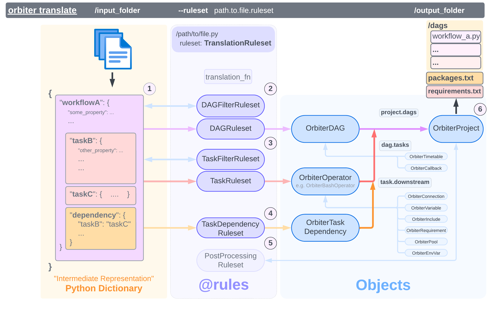

Overview¶
The brain of the Orbiter framework is in it's Rules
and the Rulesets that contain them.
- A
Rulecontains a python function that is evaluated and produces something (typically an Object) or nothing - A
Rulesetis a collection ofRulesthat are evaluated in priority order - A
TranslationRulesetis a collection ofRulesets, relating to an Origin and FileType, with atranslate_fnwhich determines how to apply the rulesets.
Different Rules are applied in different scenarios;
such as for converting input to a DAG (@dag_rule),
or a specific Airflow Operator (@task_rule),
or for filtering entries from the input data
(@dag_filter_rule, @task_filter_rule).
Tip
To map the following input
to an Airflow
BashOperator,
a Rule could parse it as follows:
@task_rule
def my_rule(val):
if 'command' in val:
return OrbiterBashOperator(task_id=val['id'], bash_command=val['command'])
This returns a
OrbiterBashOperator, which will become an Airflow
BashOperator
when the translation completes.
orbiter.rules.rulesets.translate ¶
translate(
translation_ruleset, input_dir: Path
) -> OrbiterProject
Orbiter expects a folder containing text files which may have a structure like:
The default translation function (orbiter.rules.rulesets.translate) performs the following steps:

- Find all files with the expected
TranslationRuleset.file_type(.json,.xml,.yaml, etc.) in the input folder. Load each file and turn it into a Python Dictionary. - For each file: Apply the
TranslationRuleset.dag_filter_rulesetto filter down to entries that can translate to a DAG, in priority order.- For each: Apply the
TranslationRuleset.dag_ruleset, to convert the object to anOrbiterDAG, in priority-order, stopping when the first rule returns a match. If no rule returns a match, the entry is filtered.
- For each: Apply the
- Apply the
TranslationRuleset.task_filter_rulesetto filter down to entries in the DAG that can translate to a Task, in priority-order.- For each: Apply the
TranslationRuleset.task_ruleset, to convert the object to a specific Task, in priority-order, stopping when the first rule returns a match. If no rule returns a match, the entry is filtered.
- For each: Apply the
- After the DAG and Tasks are mapped, the
TranslationRuleset.task_dependency_rulesetis applied in priority-order, stopping when the first rule returns a match, to create a list ofOrbiterTaskDependency, which are then added to each task in theOrbiterDAG - Apply the
TranslationRuleset.post_processing_ruleset, against theOrbiterProject, which can make modifications after all other rules have been applied. - After translation - the
OrbiterProjectis rendered to the output folder.
Source code in orbiter/rules/rulesets.py
99 100 101 102 103 104 105 106 107 108 109 110 111 112 113 114 115 116 117 118 119 120 121 122 123 124 125 126 127 128 129 130 131 132 133 134 135 136 137 138 139 140 141 142 143 144 145 146 147 148 149 150 151 152 153 154 155 156 157 158 159 160 161 162 163 164 165 166 167 168 169 170 171 172 173 174 175 176 177 178 179 180 181 182 183 184 185 186 187 188 189 190 191 192 193 194 195 196 197 198 199 200 201 202 203 204 205 206 207 208 209 210 211 212 213 214 215 216 217 218 219 220 221 222 223 224 225 226 227 228 229 230 231 232 233 234 235 236 237 238 239 240 241 242 243 | |
orbiter.rules.rulesets.load_filetype ¶
Orbiter converts all file types into a Python dictionary "intermediate representation" form, prior to any rulesets being applied.
| FileType | Conversion Method |
|---|---|
XML |
xmltodict_parse |
YAML |
yaml.safe_load |
JSON |
json.loads |
Source code in orbiter/rules/rulesets.py
orbiter.rules.rulesets.xmltodict_parse ¶
Calls xmltodict.parse and does post-processing fixes.
Note
The original xmltodict.parse method returns EITHER:
- a dict (one child element of type)
- or a list of dict (many child element of type)
This behavior can be confusing, and is an issue with the original xml spec being referenced.
This method deviates by standardizing to the latter case (always a list[dict]).
All XML elements will be a list of dictionaries, even if there's only one element.
>>> xmltodict_parse("")
Traceback (most recent call last):
xml.parsers.expat.ExpatError: no element found: line 1, column 0
>>> xmltodict_parse("<a></a>")
{'a': None}
>>> xmltodict_parse("<a foo='bar'></a>")
{'a': [{'@foo': 'bar'}]}
>>> xmltodict_parse("<a foo='bar'><foo bar='baz'></foo></a>") # Singleton - gets modified
{'a': [{'@foo': 'bar', 'foo': [{'@bar': 'baz'}]}]}
>>> xmltodict_parse("<a foo='bar'><foo bar='baz'><bar><bop></bop></bar></foo></a>") # Nested Singletons - modified
{'a': [{'@foo': 'bar', 'foo': [{'@bar': 'baz', 'bar': [{'bop': None}]}]}]}
>>> xmltodict_parse("<a foo='bar'><foo bar='baz'></foo><foo bing='bop'></foo></a>")
{'a': [{'@foo': 'bar', 'foo': [{'@bar': 'baz'}, {'@bing': 'bop'}]}]}
Parameters:
| Name | Type | Description |
|---|---|---|
input_str |
str
|
The XML string to parse |
Returns:
| Type | Description |
|---|---|
dict
|
The parsed XML |